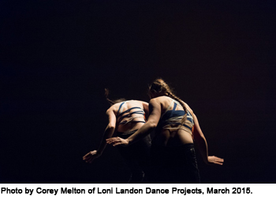

past performance |
|||
|
the CURRENT SESSIONS: Volume V, Issue II. showtimes:Friday, August 21 @ 7:30pm |
 | ||
|
Volume V, Issue II. will primarily focus on works incorporating both gallery space and stage, collaborations with live musicians, some drag, and even rollerblades. 10 select choreographers, 3 guest artists, a TalkBack panel led by Tara Sheena of Culturebot, plus opening / closing receptions take place over a 3-day festival; a creative lab and workshop series for both dancers and for the public take place prior to the weekend. This 8th Edition of the performance series is curated by Alexis Convento, Founder & Producing Director, Allison Jones, Development Associate and with guest curators Lauren Bakst, artist/writer; Kate Wallich, artistic director of the YC; and Tyler Gilstrap, performance director of the (un)scene art show. The CURRENT SESSIONS is a performing arts organization that develops and presents the work of emerging artists. Through the production of curated performances, residencies, artist-led laboratory sessions, and open discussions, the CURRENT SESSIONS acts as a center for creative research on contemporary dance and performance art. Our programs encourage a performing arts community that is innovative in thought, diverse in approach, and experimental in form. Learn more about us at www.thecurrentsessions.com PROGRAMMING SCHEDULE Friday, August 21 at 730pm Saturday, August 22 at 730pm Sunday, August 23 at 3pm Sunday, August 23 at 7pm Find more information, including artist bios and workshop descriptions, at www.thecurrentsessions.com/up-next |
|||
upcoming performances |
|||
 |
|||
| EVQ Film Festival 2018 August 20-25 |
|||
performance archives |
|||
| 2018 | 2017 | 2016 | 2015 |
| 2014 | 2013 | 2012 | 2011 |
| 2010 | 2009 | 2008 | 2007 |